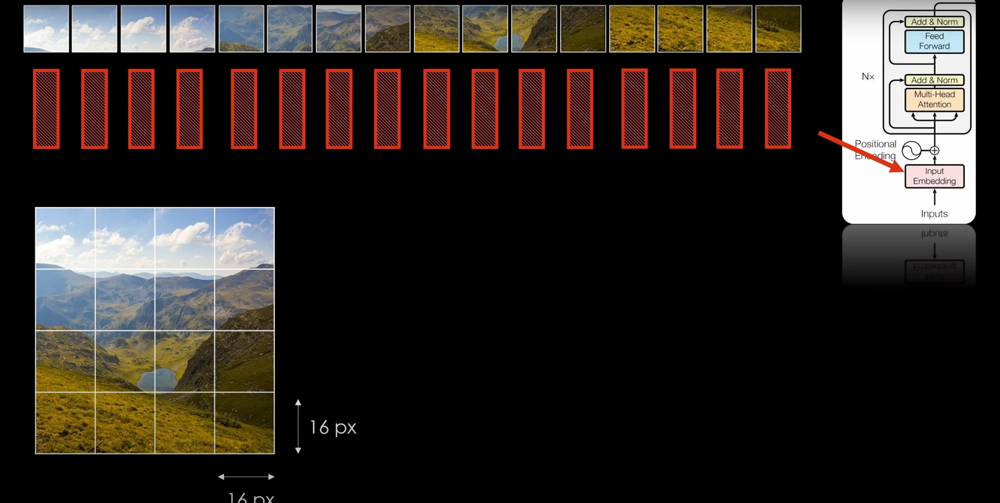

!pip install -Uqq git+https://github.com/fastai/course22p2Unpacking Attention & Transformers in Vision: From Theory to Implementation
Attention is the driving force behind the latest AI breakthroughs, pushing the boundaries of what’s possible in artificial intelligence. From ChatGPT to the feats of Stable diffusion, attention is the secret sauce behind these cutting-edge models. Today, we’re diving headfirst into the world of attention as used in vision. We’ll break down how it works, demystifying the ‘aha’ moment when machines learn to focus on what truly matters. Attention has been the peice which has accelerated the AI world in the recent past.We will understand each step of attention, draw out to get intuition of how it is possible to “attend” using the attention mechanism, write our attention blocks from scratch. Then we will move onto the Transformer architecture for Vision and implement the Vision Transformer (ViT). We will start with the naive application of self-attention to images that requires each pixel attends to every other pixel, then move onto Multi-head attention, and then finally go onto techniques like patching the input image as sequence when we move onto the ViT architecture.
Naive Self-attention
Let’s say we have a cat image that is of shape = (height,width,channels). Now wouldn’t it be handy if each pixel(or few pixels and/or channels together) knew about what the other part of the image looks like. If a model is working with a cat image, and if the pixels around the ear had some information or context about how the pixels at the other parts of the image are, its job would be much easier. When we apply convolutions with kernels across images to find out the activations, this information is not captured and only the local neighbouring values are learnt to create a local activation for one small part of the image. Even with the CNN receptive field this information gets faded as the network gets deeper. With attention what we are trying to do is have the weighted average of all the pixels and each pixel value is updated to be the original value and this learned weighted average of all the other pixels at different parts of the image. Naive application of self-attention to images would require that each pixel attends to every other pixel.The standard Transformer receives as input a 1D sequence of token embeddings. We flatten out our input image into (h x w, channels) dimensions. In the cells below we create an input with batch size 64, 32 channels and 16X16 pixels map and reshape it to be (n_batch, h x w, channels)
%%capture
!pip install accelerateimport math,torch
from torch import nn
from miniai.activations import *
from torch import Tensor
from einops.layers.torch import Rearrange
import torch
from torchvision.datasets import OxfordIIITPet
import matplotlib.pyplot as plt
from random import random
from torchvision.transforms import Resize, ToTensor
from torchvision.transforms.functional import to_pil_imageimport matplotlib.pyplot as pltset_seed(42)
x = torch.randn(64,32,16,16)t = x.view(*x.shape[:2], -1).transpose(1, 2)
t.shapetorch.Size([64, 256, 32])Debunking the “q”,“k”,“v” projections.
In the original “Attention is all you need” paper it is quoted as “an attention function can be described as mapping a query and a set of key-value pairs to an output, where the query, keys, values, and output are all vectors”. Describing it in terms of query and key-value pairs instantly makes me think of a mapping function between known vectors which is not true, as these vectors are initialised and learnt over time. Therefore, another term that is more intuitive for me to associate with q,k and v are projections. Each of the q,k and v are different projections of the input. Let’s see how these projections are created. We create 3 linear transformations with nn.Linear where in_features, out_features equal to the number of channels. The weight matrices of these 3 different transformations will be initialised randomly, and these weights(which are learnable parameters of nn.Linear) will be matrix multiplied by input which will give us the 3 different projections of the input.
ni = 32
sk = nn.Linear(ni, ni)
sq = nn.Linear(ni, ni)
sv = nn.Linear(ni, ni)k = sk(t)
q = sq(t)
v = sv(t)
k.shape,q.shape,v.shape(torch.Size([64, 256, 32]),
torch.Size([64, 256, 32]),
torch.Size([64, 256, 32]))Let’s get into the details and visualise these Linear Transformation. The shapes of the various components are inp,t = [64,256,32] Linear layer,l = (in_features=32,out_features=32,b=True). So the weight matrix ‘w’ of the Linear layer nn.Linear is [32,32] matrix. out,(k,q,v) = [64,256,32]
Next step is to take the dot product of the q and k projections. These projections (q,k) have value of each pixel across all the channels(32). So if we take the dot product of each pixel value across all channes with another pixel value across all channels, we will get the relationship between those 2 pixels(and eventually all of the pixels in the grid) or we will get to know how similar those pixels are. Let’s visualise this for better understanding.
We do the matrix product of q with the transpose of k. We see that as we fill up the resultant 256X256 matrix, we get the relationship or similarity between each of the pixels. If we look at the first row of q and first column of k.T (selected in red color) the first pixel across channels of q projection is multiplied with first pixel across channels of k projection to fill out “a” in the resultant matrix. Similarily, as we continue the dot product we get the similarity(or relationships) between all the pixels . Let’s fill out some values in the result matrix and see what is it actually doing. So to get a,b,c,d we do the dot product of
- a - 1st pixel all channels (q) X 1st pixel all channles(k)
- b - 1st pixel all channels(q) X 2nd pixel all channles(k)
- d - 2nd pixel all channels(q) X 1st pixel all channles(k)
Let’s go ahead and do the q@k.T
s = (q@k.transpose(1,2))
s.shapetorch.Size([64, 256, 256])Now, we will take this result “s” and do the matrix product with the v projection and the final output of the self attention block is the original input plus all the transformations we have done using q,k,v and other projections.
res = s.softmax(dim=-1)@vWe take the softmax across each row so that the sum of each row of “s” is 1 and we have a weight for each pixel.
res.shapetorch.Size([64, 256, 32])So now let’s write our own Self Attention class
class SelfAttention(nn.Module):
def __init__(self, ni):
super().__init__()
self.scale = math.sqrt(ni)
self.norm = nn.GroupNorm(1, ni)
self.q = nn.Linear(ni, ni)
self.k = nn.Linear(ni, ni)
self.v = nn.Linear(ni, ni)
self.proj = nn.Linear(ni, ni)
def forward(self, x):
inp = x
n,c,h,w = x.shape
x = self.norm(x)
x = x.view(n, c, -1).transpose(1, 2)
q = self.q(x)
k = self.k(x)
v = self.v(x)
s = (q@k.transpose(1,2))/self.scale
x = s.softmax(dim=-1)@v
x = self.proj(x)
x = x.transpose(1,2).reshape(n,c,h,w)
return x+inpsa = SelfAttention(32)
ra = sa(x)
ra.shapetorch.Size([64, 32, 16, 16])MultiHead Self-Attention
Naive application of self-attention to images would require that each pixel attends to every other pixel. With quadratic cost in the number of pixels, this does not scale to realistic input sizes. So one method which is very intuitive is to group some channels together from different parts of the image. These groups of channels are called “heads”. Now each head would have few channels grouped together and these heads will carry information about different aspects of the image depending on what the channels in a particular group(or head) capture. For understanding purposes , we can assume one head has capured part of the image which has information about the temperature(brightness) of the image, another head has information about the regions that correspond to cat features like ears, eyes, nose, or tail and so on.- As compared to our naive self attention, we do the dot product between these heads or groups of channels
- As we use softmax to sum a row and get weight for each pixel, if we just use pixel self attention, the attention might be biased to just one large value as the softmax of that large value would be enormous compared to other values ( as e^x would amplify that particular value). So grouping channels together eliminates this bias.
As seen below, rather than doing attention on each pixel across each channel as we did in the naive self attention, we are doing attention on these heads which contain different channels grouped together. We group the channels together and carry out attention calculations.
Now these heads carry different information about different parts of the image and attend to each other. Let’s see how to translate this in code. The main difference from our naive self attention is the rearrangement of the input dimensions.
from einops import rearrangeclass SelfAttentionMultiHead(nn.Module):
def __init__(self, ni, nheads):
super().__init__()
self.nheads = nheads
self.scale = math.sqrt(ni/nheads)
self.norm = nn.BatchNorm2d(ni)
self.qkv = nn.Linear(ni, ni*3)
self.proj = nn.Linear(ni, ni)
def forward(self, inp):
n,c,h,w = inp.shape
x = self.norm(inp).view(n, c, -1).transpose(1, 2)
x = self.qkv(x)
x = rearrange(x, 'n s (h d) -> (n h) s d', h=self.nheads)
q,k,v = torch.chunk(x, 3, dim=-1)
s = (q@k.transpose(1,2))/self.scale
x = s.softmax(dim=-1)@v
x = rearrange(x, '(n h) s d -> n s (h d)', h=self.nheads)
x = self.proj(x).transpose(1,2).reshape(n,c,h,w)
return x+inp- Now we rearrange the images of dimensions [64,256,32] or [n,s,c] into [(n h), s, d] or [512,256,4].
- What we did here was to have the 32 channels break down into 8 groups of 4.
- Rather than having 64 images in each batch of 256 pixels and 32 channels, we have 512 images per batch of 256 pixels and 4 channels.
- Now we decreased the number of channels for each image to 4 but we created 8 times more images in each batch.
- We want each of the head(groups of channels) we created to be independent and have nothing to do with each other. So now as we turn one entire image of 32 channels into 8 images of 4 channels, they are completely independent and have nothing to do with each other as they are seperate images now.
- Each of the head which has captured different set of information(channels) of the image is now independent ofhe other heads created.
t = x.view(*x.shape[:2], -1).transpose(1, 2)
t.shapetorch.Size([64, 256, 32])t = rearrange(t, 'n s (h d) -> (n h) s d', h=8)
t.shapetorch.Size([512, 256, 4])After we have done the rearrangement, we do the matrix product of the q and k.T projection as before. Then we take the softmax across the rows to get the weight pixels and finally rearrange the input images into their original projection shape with “rearrange(x, ‘(n h) s d -> n s (h d)’, h=self.nheads)” and do one final projection to give it a chance to learn some additional features. Finally, we reshape the image into its original raw form(n,c,h,w) and return the input with the addition of attention weights.
sa = SelfAttentionMultiHead(32, 8)
sx = sa(x)
sx.shapetorch.Size([64, 32, 16, 16])sx.mean(),sx.std()(tensor(-0.0306, grad_fn=<MeanBackward0>),
tensor(1.0076, grad_fn=<StdBackward0>))t = x.view(*x.shape[:2], -1).transpose(1, 2)
t.shape
nm = nn.MultiheadAttention(32, num_heads=8, batch_first=True)
nmx,nmw = nm(t,t,t)
nmx = nmx+tnmx.mean(),nmx.std()(tensor(-0.0019, grad_fn=<MeanBackward0>),
tensor(1.0028, grad_fn=<StdBackward0>))Vision Transformers (ViT)
Now that we have understood what attention is in Vision, implemented naive self-attention and multihead attention let’s move onto the Vision transformer(ViT). ViT expands the success of transformer models from sequential data to images. We are going to dissect each component of the ViT model architecture for classification, implement it in code piece by piece. In the process of understanding and implementing ViT, we will touch upon few questions which can help us interpret the model. Questions like what do the attenion heads in ViT capture? Which attention heads are more important? What attention patterns have individual heads learned?
ViT classifier runs in five key steps- Decompose the input image into a sequence of patch tokens
- Concatenate CLS
- Add positional encodings
- Multi-head self-attention
- Use the CLS token for prediction
Below is the ViT architecture as drawn out in the original ViT paper
Decompose the input image into a sequence of patch tokens
Original Transformers was designed for a sequence task. Here, we transform the image into a sequence of flattened 2D patches.

As seen in the image above, we break the H,W,C image (where (H, W) is the resolution of the original image, C is the number of channels, (P, P) is the resolution of each image patch(16,16) in the above example) into N(=HW/P*P) patches. Each of the red box of each image patch represents the input patch embedding which is passed onto the ViT model as input. We just use a fully connected neurel net to get these embeddings for our implementation. The input sequence can also be formed from feature maps of a CNN which we are not doing in this implementation.
to_tensor = [Resize((144, 144)), ToTensor()]
class Compose(object):
def __init__(self, transforms):
self.transforms = transforms
def __call__(self, image, target):
for t in self.transforms:
image = t(image)
return image, target
def show_images(images, num_samples=40, cols=8):
""" Plots some samples from the dataset """
plt.figure(figsize=(15,15))
idx = int(len(dataset) / num_samples)
print(images)
for i, img in enumerate(images):
if i % idx == 0:
plt.subplot(int(num_samples/cols) + 1, cols, int(i/idx) + 1)
plt.imshow(to_pil_image(img[0]))
dataset = OxfordIIITPet(root=".", download=True, transforms=Compose(to_tensor))
# show_images(dataset)Let’s breakdown one image into patches, flatten it and create its embedding by passing it onto a feed forward network
patch_size=8
in_channels = 3
emb_size = 128
sample_datapoint = torch.unsqueeze(dataset[0][0], 0)
print("Initial shape: ", sample_datapoint.shape)
patch_reshaped = rearrange(sample_datapoint,'b c (h p1) (w p2) -> b (h w) (p1 p2 c)', p1=patch_size, p2=patch_size)
print("Shape after einops dimensions reshape" ,patch_reshaped.shape)
patch_emb = nn.Linear(patch_size * patch_size * in_channels, emb_size)
patch_emb = patch_emb(patch_reshaped)
print("Shape of the final embedded patch", patch_emb.shape)Initial shape: torch.Size([1, 3, 144, 144])
Shape after einops dimensions reshape torch.Size([1, 324, 192])
Shape of the final embedded patch torch.Size([1, 324, 128])Let’s create a class to get the Patch Embeddings
class PatchEmbedding(nn.Module):
def __init__(self, in_channels = 3, patch_size = 8, emb_size = 128):
self.patch_size = patch_size
super().__init__()
self.projection = nn.Sequential(
# break-down the image in s1 x s2 patches and flatten them
Rearrange('b c (h p1) (w p2) -> b (h w) (p1 p2 c)', p1=patch_size, p2=patch_size),
nn.Linear(patch_size * patch_size * in_channels, emb_size)
)
def forward(self, x: Tensor) -> Tensor:
x = self.projection(x)
return xsample_datapoint = torch.unsqueeze(dataset[0][0], 0)
print("Initial shape: ", sample_datapoint.shape)
embedding = PatchEmbedding()(sample_datapoint)
print("Patches shape: ", embedding.shape)Initial shape: torch.Size([1, 3, 144, 144])
Patches shape: torch.Size([1, 324, 128])Concatenate CLS
Typically when you are doing a classification task, you want a all of the information you extracted into a single representation and use it for classification. When we use CNNs, we have a fully connected layer at the end of the network which acts as the classification head. As Transformer is a sequence to sequence model and as there is no decoder layer in ViT, then the length of input sequence (number of patches) equals the length of output sequence. Here we add a dummy input, call it class token and apply the classification layer on the corresponding output item. So the Cls token is a dummy input which is later filled with information collected from all of the patch input tokens. Initially it is randomly initialised and is a learnable parameter. It acts as a global feature extractor which represents the entire image and is then used for downstream tasks, which is classification in our case. CLS learns to accumulate class-related features used to generate the final class probability.
One interesting thing is that CLS token attends to all the other tokens and all the other tokens attend to the CLS token as well. One can think the CLS token attending to every other token will help it learn about the image information captured by the patch tokens. Do Patch tokens attending to the CLS tokens help them get some relevant information about the image class, is a something which would be interesting to explore. We will go into the different types of attention ViT captures(patch-patch,patch-cls,cls-cls) in detail later.
As we can see the red circled CLS token is concatenated with all the other positional embeddings(expained in the next section).
Positional Embeddings
The zero-initialized positional encodings are added to the (1+p^2)xh matrix. They are trained to learn each patch’s positional information. Just like the CLS token, we learn these positional embeddings.
The Transformer Encoder with Multi-layer Multi-head self-attention
This step contains l stacked attention layers, each with n attention heads. Each head learns a (1+p^2) × (1+p^2) attention weight matrix A, reflecting the pair-wise attention between all 1+p^2 tokens. ( where p is the patch embedding size or patch_size).
The ViT transfomer encoder contains 4 building blocks. Let’s go ahead and implement them.
class Attention(nn.Module):
def __init__(self, dim, heads = 8, dim_head = 64, dropout = 0.):
super().__init__()
inner_dim = dim_head * heads
project_out = not (heads == 1 and dim_head == dim)
self.heads = heads
self.scale = dim_head ** -0.5
self.norm = nn.LayerNorm(dim)
self.attend = nn.Softmax(dim = -1)
self.dropout = nn.Dropout(dropout)
self.to_qkv = nn.Linear(dim, inner_dim * 3, bias = False)
self.to_out = nn.Sequential(
nn.Linear(inner_dim, dim),
nn.Dropout(dropout)
) if project_out else nn.Identity()
def forward(self, x):
x = self.norm(x)
qkv = self.to_qkv(x).chunk(3, dim = -1)
q, k, v = map(lambda t: rearrange(t, 'b n (h d) -> b h n d', h = self.heads), qkv)
dots = torch.matmul(q, k.transpose(-1, -2)) * self.scale
attn = self.attend(dots)
attn = self.dropout(attn)
out = torch.matmul(attn, v)
out = rearrange(out, 'b h n d -> b n (h d)')
return self.to_out(out)Attention(dim=128, heads=4, dropout=0.)(torch.ones((1, 5, 128))).shapetorch.Size([1, 5, 128])We use Layer Normalisation below. If we think about why layer normalisation is used, and not the more common batch norm used in Vision.It is a common practive that layer norm is used in NLP tasks and batch norm is used in Vision tasks. As transformers were intially built for sequence nlp inputs, layer norm was used. But even in ViT, where we use transformers in vision, layer norm is still used. The reason for this might be how the normalisation stats - mean and variance, are calculated in layer norm. In batchnorm, the mean and variance statistics used for normalization are calculated across all elements of all instances in a batch(elements mean pixels and instance means an image). For layernorm, the statistics are calculated across the feature dimension, for each element and instance independently. LayerNorm computes the mean and variance of all channels at each spatial location (each pixel) independently across all images in the batch. The normalization is then performed independently for each spatial location (each pixel) using the calculated mean and variance across all channels at that location. This aligns with how transformers work. In transformers, we are not concerned with the other instances in the batch when we are doing attention, but we what is more important is how rich the feature relationship information we have captured is. So normalising across the all features(or channels) of an image is very similar to what we are doing with attention.
class PreNorm(nn.Module):
def __init__(self, dim, fn):
super().__init__()
self.norm = nn.LayerNorm(dim)
self.fn = fn
def forward(self, x, **kwargs):
return self.fn(self.norm(x), **kwargs)
norm = PreNorm(128, Attention(dim=128, heads=4, dropout=0.))
norm(torch.ones((1, 5, 128))).shapetorch.Size([1, 5, 128])class FeedForward(nn.Sequential):
def __init__(self, dim, hidden_dim, dropout = 0.):
super().__init__(
nn.Linear(dim, hidden_dim),
nn.GELU(),
nn.Dropout(dropout),
nn.Linear(hidden_dim, dim),
nn.Dropout(dropout)
)
ff = FeedForward(dim=128, hidden_dim=256)
ff(torch.ones((1, 5, 128))).shapetorch.Size([1, 5, 128])class ResidualAdd(nn.Module):
def __init__(self, fn):
super().__init__()
self.fn = fn
def forward(self, x, **kwargs):
res = x
x = self.fn(x, **kwargs)
x += res
return x
residual_att = ResidualAdd(Attention(dim=128, heads=4, dropout=0.))
residual_att(torch.ones((1, 5, 128))).shapetorch.Size([1, 5, 128])Use the CLS token for prediction
This step decouples the CLS embedding from the patch tokens, and transforms it into class logits through fully-connected layers.
Final ViT class
Let’s go ahead and put all of the pieces we created together
from einops import repeat
class ViT(nn.Module):
def __init__(self, ch=3, img_size=144, patch_size=4, emb_dim=32,
n_layers=6, out_dim=37, dropout=0.1, heads=2):
super(ViT, self).__init__()
# Attributes
self.channels = ch
self.height = img_size
self.width = img_size
self.patch_size = patch_size
self.n_layers = n_layers
# Patching
self.patch_embedding = PatchEmbedding(in_channels=ch,
patch_size=patch_size,
emb_size=emb_dim)
# Learnable params
num_patches = (img_size // patch_size) ** 2
self.pos_embedding = nn.Parameter(
torch.randn(1, num_patches + 1, emb_dim))
self.cls_token = nn.Parameter(torch.rand(1, 1, emb_dim))
# Transformer Encoder
self.layers = nn.ModuleList([])
for _ in range(n_layers):
transformer_block = nn.Sequential(
ResidualAdd(PreNorm(emb_dim, Attention(emb_dim, heads = heads, dropout = dropout))),
ResidualAdd(PreNorm(emb_dim, FeedForward(emb_dim, emb_dim, dropout = dropout))))
self.layers.append(transformer_block)
# Classification head
self.head = nn.Sequential(nn.LayerNorm(emb_dim), nn.Linear(emb_dim, out_dim))
def forward(self, img):
# Get patch embedding vectors
x = self.patch_embedding(img)
b, n, _ = x.shape
# Add cls token to inputs
cls_tokens = repeat(self.cls_token, '1 1 d -> b 1 d', b = b)
x = torch.cat([cls_tokens, x], dim=1)
x += self.pos_embedding[:, :(n + 1)]
# Transformer layers
for i in range(self.n_layers):
x = self.layers[i](x)
# Output based on classification token
return self.head(x[:, 0, :])
model = ViT()
model(torch.ones((1, 3, 144, 144)))tensor([[-1.0458, 0.4171, -0.9099, -0.1380, -0.4593, -0.0648, -0.4884, -0.0094,
0.1941, 0.1272, 0.3649, 0.2897, 1.0110, -0.0136, 0.8620, -0.2971,
-0.2390, -0.0801, -0.5791, -0.2363, -0.5813, -0.1375, 0.2628, 1.3497,
-0.1218, -0.2292, -0.7679, 0.4300, -0.7301, -0.7377, -1.3888, 0.2043,
-0.5364, 0.2651, 0.2471, -0.2534, 0.1637]],
grad_fn=<AddmmBackward0>)Visualising the Attention Matrix
Source:How Does Attention Work in Vision Transformers? A Visual Analytics Attempt
The attention matrix of a head can be divided into four regions based on the source and target tokens: CLS→CLS, CLS→patches, patches→CLS, and patches→patches. All of these 4 regions represent different attention relationship and can be analysed seperately and together to see how they contribute to the results.
Conclusion
We started off by understanding the fundamentals of attention, went on to implement our own attention blocks and the ViT arechitecture. We tried to draw out each step of the process, play with the shapes of various intermediate outputs, build a basic intuition on what the attention matrices are doing and implement the entire code from scratch. As good as the results of attention in vision have been, their data hungry nature and lack of inductive bias has kept it from replacing CNNs all over. For cases where there is not enough training data CNN still might be the better option. Nonetheless, attention in vision has had a huge success and is generating state of the art results all over. Understanding how and why it works as good as it has, makes us better informed about its possibilities and limitations. With this understanding we can start using it with “attention” to its process and deduce the quality of the results better.